开了7年混动后，我为何最终投向纯电？一位车主的心路历程
一、换车念头的产生
每个人想买车或换车的的需求可能都大致相同，但换车念头产生的契机肯定是各不一样的，和使用场景及偶发事件息息相关。
在仔细翻看相册之后发现在两年多前的 2023 年的 4 月 27 日的晚上7 点，在老婆公司门口接她下班。

儿子在后排闹腾但车上实在是没有任何可玩的东西的时候，我让他到前排来玩玩车机，然后玩了不到30 秒他就完全没有任何继续玩的欲望了，因为对他而言， 没有任何可玩性。
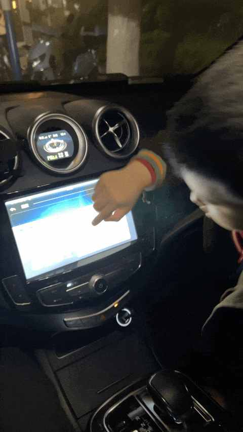
有时候会很恍惚，感觉自己用的完全是两个时代的产品： 特别是刚操作完手机，再需要修改下车机配置的时候。
聊聊人生第一台车：比亚迪唐！2017-2024，真实使用体验分享
二、逐步明确的换车需求
1️⃣ 不选特斯拉
你可能会问特斯拉销量很高，为什么不选特斯拉。
因为和两位朋友一起去特斯拉提过车，他们两位都是提的是 Model Y，Model 3 和 Model Y都有开过，早早的便把特斯拉排除掉。
- 无仪表盘、HUD 等
- 内饰过于简约
- 后排不适合长途乘坐
- 底盘是真的硬，司机在人车合一同时后排的人可能快散架
- 虽能耗优秀但电池小
- 辅助驾驶收费贵
一句话总结就是：
特斯拉开起来不错，但不符合我的用车需求和审美。
2️⃣ 不能没有四驱
在高速 120km 的时速爆胎过，爆的左后轮，得亏当时的车是四驱的，及时把车稳住靠边停车了。
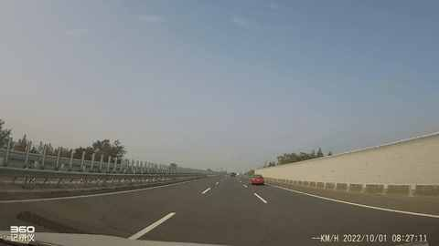
附上两张当时高速的拖车上来之后在应急车道拍的几张照片：
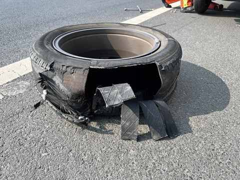
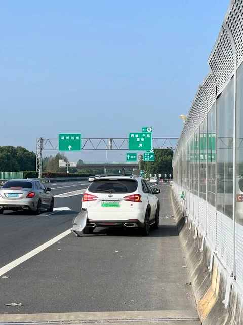
如果是后驱车爆了左后轮，就不知道能不能在几秒钟之内控制住，一切都很难说。
这个事情也提醒我，用车安全始终要排在第一位！
要注意轮胎的使用年限，在后期复盘事故原因的时候发现，最有可能的原因是：轮胎老化，虽然从磨损度上看还能用，但可能已经到了使用年限，在高速行驶中突然压到一个不起眼的小石子就到了极限。
即使后面知道了爆胎最大的原因在于轮胎，但换车的时候依然把四驱作为必选项，我们全家都需要一些安全冗余。
3️⃣ 后排平权
作为家用车，前排有的配置，后排也得有！
如果一辆家用车只有前排的司机和副驾的成员是相对舒适的，那在当下就是很不合格的一辆车。
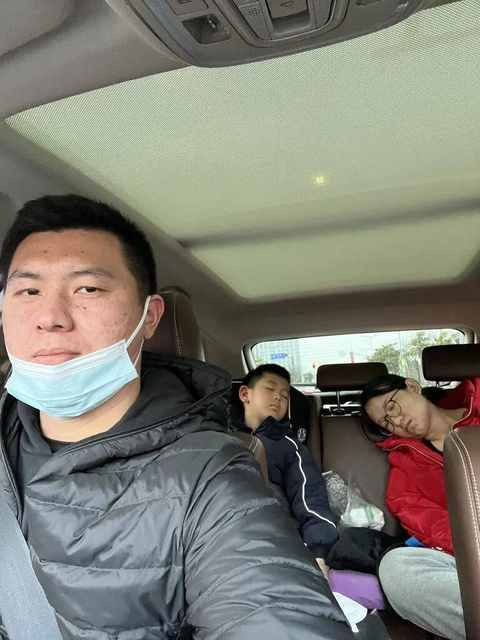
这是一个典型的场景，当时是从市区回到松江，后面的老婆和儿子睡着了但是睡的歪七八扭的，是累了但并不舒服没到红绿灯停下他们都会不由自主的换个姿势继续睡。
当时就想着如果后排的调整幅度更大，坐垫再舒服点，有通风、加热、按摩等配置他们两个肯定睡的更香一些。
所以，最终选的车的后排空间十足，选了后排沙发，前排有的配置后排也都有了，用起来感受不错。
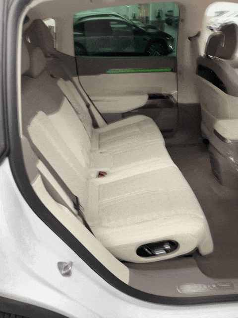
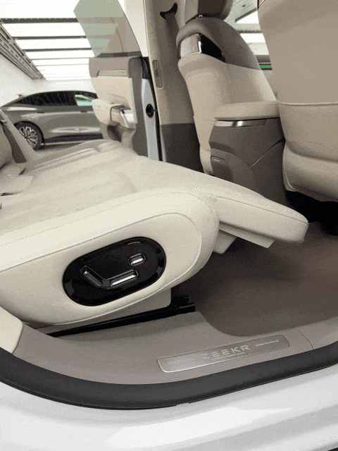
4️⃣ 大电池优先，能耗表现次之
之所以大电池优先，主要是基于不同的人、不同的驾驶习惯、不同的使用场景下能耗表现有显著差别。
例如：
- 一个开和满载
- 高速场景和国道行驶
- 激烈驾驶和谨慎驾驶
- 北方的冬天和南方冬天
- ……
虽然也有各种测试新能源车续航的自媒体博主们，但测试终归是测试， 参考意义是 有限的。
相较而言，大电池带来的确定性更强也更稳定，能兼容 不同的人、不同的驾驶习惯、不同的使用场景，大电池也成为一个必选项，最好能有 100 度。
贴几个长途高速为主的能耗图给大做个参考：
① 一家 3 口，从上海开到珠海
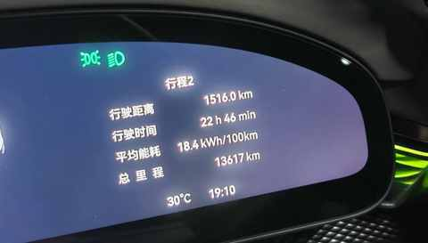
② 满载 5 人，从厦门到上海
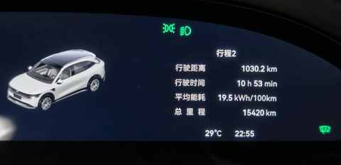
③ 满载 5 人，从上海到淮北
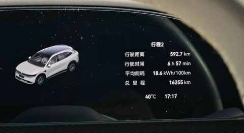
老实说这个能耗表现并不优秀但是绝对在正常范围，因为如果能耗才 15-16kWh 那必然会需要拿一些其他的体验来换。
类似于跑马拉松的运动员必然要舍弃掉一部分的体重，这样才能跑的更快更持久，我们普通人跑马拉松就不用这么极致，能在某个时间内跑完就很好了。
5️⃣ 不想再去加油站
每次去加油站的体验都不太好，好在现在完全不用去了。
① 味道不好闻
但没得选，必须闻 5-10 分钟，遇到要排队的话得 15 分钟以上
② 逃不掉的推销
即便我的是绿牌，也每次都给我推销燃油宝或其他加油站的充值活动
③ 不友好的距离
最近的充电桩就是车位上的充电桩，可以说是零距离。
其他公用充电桩也是越建越多，几百米的距离有好几个充电站。
而加油站反而是在吃减少，最近的也得也 2km。
就此敲定纯电车型，不选混动或增程。
6️⃣ 该有的配置都得有
下面的几个配置，是根据以往的使用场景总结下来发现必须要有的：
① 仪表盘 或 HUD
能让驾驶的时候更专注于视线前方
② 遮阳帘
夏天的时候懂得都懂，物理遮阳帘的效果比什么天幕来的快多了
③ 辅助驾驶
任何新能源车都不能没有这个功能，大大提升高速上的开车体验
7️⃣ 体验升级也很重要
① 尺寸合理，造型不突兀
家用车不宜过于个性化，大隐隐于市且符合全家审美即可
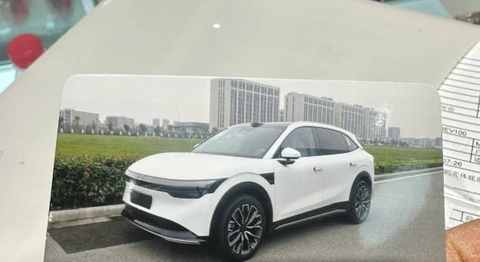
② 车机要流畅且美观
对于上一辆车的车机实在是不想多说一个字，贴一张正在用的车的车机照片：
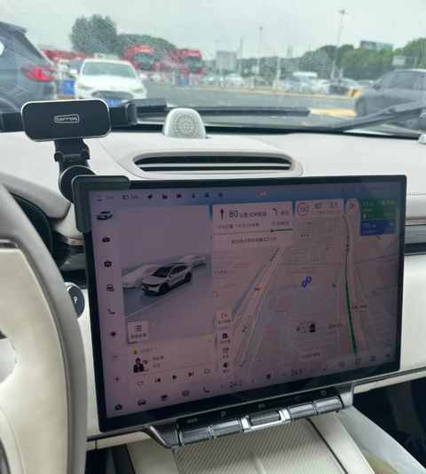
③ 得有提升体验的配置
氛围灯要有

空悬和底盘质感也要有
三、用一年半时间，试驾 10 款车
随着时间的推移，自己和家庭的的用车需求也逐步从模糊到清晰，从而梳理出来一个明确的需求明细单，并针对每个项目都设置了一个优先级。
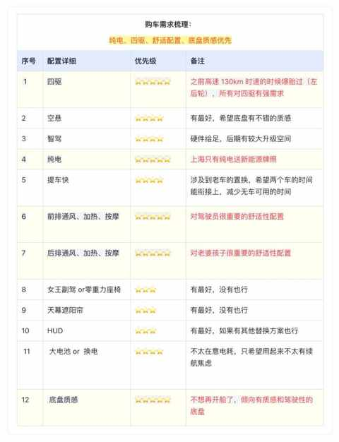
一定要尽量多的试驾，光看车和看云测评有用但感受到的东西十分有限，作为普通人买个车不容易要认真且用心的对待。
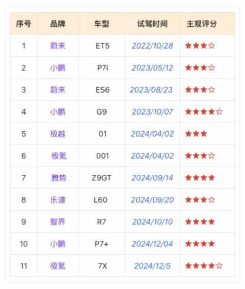
前比亚迪车主，聊聊近两年试驾的 11 款自主品牌纯电车：小鹏、蔚来、极氪……
经过长达一年半的试驾之后，选择的是最后试驾的极氪 7X。
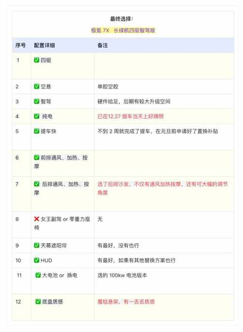
- 纯电车自驾游： 6 天 3300km 之后有了 5 个感受
- 拒绝偏科，回归实用：极氪7X，为家庭用户打造的一款“正常”的纯电 SUV
- 7 个月开极氪7X跑16000km后，分享这 5 个真实用车体验
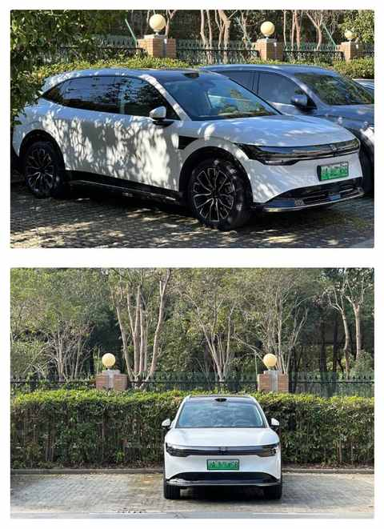
四、结语
说实话，现在选车是一件并不容易也不简单的事情。
希望大家在梳理自身需求方面，都尽量给自己更多的时间去体验和感受，逐步把自己和家庭的用车的需求都梳理的更明确。
这样下来，你会更快更准的找到属于你的哪款车，也希望大家都能如愿选到自己的梦中情车。